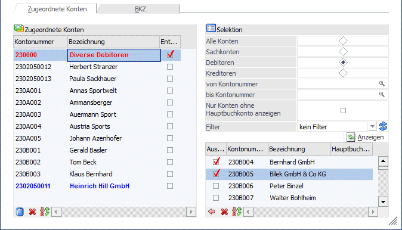
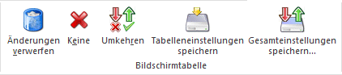
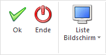
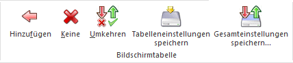

Dieses Register befindet sich Im Menüpunkt
1 WinLine FIBU
1 Stammdaten
1 Konten
1 Hauptbuchkonten
Zugeordnete Konten
In diesem Register werden in der Tabelle links alle Konten angezeigt, die dem selektierten Hauptbuchkonto bereits zugeordnet wurden. Mit der Checkbox "Entfernen" in der Tabelle werden jene Konten selektiert, die nicht mehr als Nebenbuchkonto zu diesem Hauptbuchkonto verwendet werden sollen. Sobald die Checkbox gesetzt wird, wird das Konto rot dargestellt. Neu zugeordnete Konten werden blau dargestellt. Die Einstellung wird mit einem Klick auf den OK Button gespeichert.

Tabellenbuttons

Ø Änderungen verwerfen
Alle noch nicht gespeicherten Änderungen in dieser Tabelle können mit dem Button verworfen werden.
Ø Keine
Durch Anwahl des Keine-Buttons werden alle selektierten Zeilen in der Tabelle deaktiviert.
Ø Umkehren
Durch Anwahl des Umkehren-Buttons werden alle Selektionen in der Tabelle umgekehrt.
Ø Tabelleneinstellungen speichern
Die Spalten einer Tabelle können grundsätzlich an beliebige Positionen verschoben, bzw. in der Breite entsprechend angepasst werden. Durch Anwahl des Buttons "Tabelleneinstellungen speichern" werden die Einstellungen benutzerspezifisch gespeichert und bei dem nächsten Aufruf des Programmpunktes wieder vorgeschlagen.
Ø Gesamteinstellungen speichern
Im Gegensatz zu "Tabelleneinstellungen speichern" können mit "Gesamteinstellungen speichern" mehrere Tabellenaufbauten gespeichert und nach Wunsch geladen werden. Zusätzlich werden Sonderfunktionen der Tabelle (z.B. "Spalte gruppieren") ebenfalls bei der Speicherung bedacht.
Buttons

Ø OK
Durch Drücken des OK-Buttons oder der F5-Taste wird der aktivierte Datensatz gespeichert.
Ø Ende
Durch Drücken des Ende-Buttons (der ESC-Taste) wird das Fenster geschlossen.
Ø Liste Bildschirm / Liste Drucker
Mit diesem Button kann eine Liste der zugeordneten Nebenbuchkonten wahlweise für alle Hauptbuchkonten bzw. für nur für das aktuell selektierte Hauptbuchkonto auf den Bildschirm oder den Drucker ausgegeben.
Selektion
Im Bereich "Selektion" auf der rechten Seite können die Konten ausgewählt werden, die zum Hauptbuchkonto hinzugefügt werden sollen. Es können die Konten, die in der Auswahl-Tabelle angezeigt werden durch die folgende Felder selektiert werden:
ü Alle Konten
ü Sachkonten
ü Debitoren
ü Kreditoren
ü Kontonummer "Von-Bis"
Ø Nur Konten ohne Hauptbuchkonto anzeigen
Über die Aktivierung dieser Checkbox werden nur jene Konten angezeigt, die noch keinem Hauptbuchkonto zugeordnet wurden.
Fensterbuttons
Ø Filter
Mittels Filter kann die Kontenselektion mit Zugriff auf Daten in der Kontenview weiter eingeschränkt werden. Es können damit z.B. Konten nach dem aktuellen Saldo per Filter selektiert werden.
Ø
Mit diesem Button wird die Tabelle entsprechend der Filterselektionen gefüllt. In der Tabelle werden nur jene Konten angezeigt, die dem aktuellen Hauptbuchkonto zugeordnet werden können (d.h. ist das Hauptbuchkonto ein Bilanzkonto, werden Bilanzkonten, Debitoren- und Kreditorenkonten angezeigt, ist das Hauptbuchkonto ein Erfolgskonto, werden nur Erfolgskonten vorgeschlagen).
Hinweis:
FIBU-Subkonten werden nicht in dieser Tabelle mit angezeigt.
Die Konten können aus der Tabelle einzeln (per Doppelklick) übernommen werden oder mittels Checkbox "Auswahl" für die Übernahme selektiert werden.
Tabellenbuttons

Ø Hinzufügen
Über diesen Button werden die in der Tabelle selektierten Konten dem ausgewählten Hauptbuchkonto hinzugefügt. Sie werden blau in der Tabelle der zugeordneten Konten dargestellt, solange die Änderung noch nicht gespeichert wurde.
Ø Keine
Durch Anwahl des Keine-Buttons werden alle selektierten Zeilen in der Tabelle deaktiviert.
Ø Umkehren
Durch Anwahl des Umkehren-Buttons werden alle Selektionen in der Tabelle umgekehrt.
Ø Tabelleneinstellungen speichern
Die Spalten einer Tabelle können grundsätzlich an beliebige Positionen verschoben, bzw. in der Breite entsprechend angepasst werden. Durch Anwahl des Buttons "Tabelleneinstellungen speichern" werden die Einstellungen benutzerspezifisch gespeichert und bei dem nächsten Aufruf des Programmpunktes wieder vorgeschlagen.
Ø Gesamteinstellungen speichern
Im Gegensatz zu "Tabelleneinstellungen speichern" können mit "Gesamteinstellungen speichern" mehrere Tabellenaufbauten gespeichert und nach Wunsch geladen werden. Zusätzlich werden Sonderfunktionen der Tabelle (z.B. "Spalte gruppieren") ebenfalls bei der Speicherung bedacht.
Buttons
Ø OK
Durch Drücken des OK-Buttons oder der F5-Taste wird der aktivierte Datensatz gespeichert.
Ø Ende
Durch Drücken des Ende-Buttons (der ESC-Taste) wird das Fenster geschlossen.
Ø Liste Bildschirm / Liste Drucker
Mit diesem Button kann eine Liste der zugeordneten Nebenbuchkonten wahlweise für alle Hauptbuchkonten bzw. für nur für das aktuell selektierte Hauptbuchkonto auf den Bildschirm oder den Drucker ausgegeben.